Personalization
The web client displays pages that can be portal pages, Classic pages, or new pages. The latter means that we use a facet of a representation. For instance, the customer detail, the customer list, or the customer page in Edit mode are facets of a given representation.
Changing the layout of a page is done by using the personalization mode that allows the following actions:
- Change the order of the information on a page.
- Organize hierarchically groups of information that can appear as staked elements, tabs, columns, and so forth.
- Hide elements or make them collapsible.
- Change the widget used for the input of information.
- Change the labels associated with the elements.
The personalization applies to New pages, Classic pages and Portal pages. Make sure that the control of the cursor position is controlled by the server and that the controls are made in blocking mode on the Classic pages. Using the personalization to change the order or to hide fields that carry controls on a Classic page may produce unexpected results and therefore should be avoided.
The result of the personalization is a differential structure that applies to the information sent by the application server. This means that even if the representation changes on the server, the personalization will apply on a modified representation without error, yet with some unexpected results:
- New fields will remain as they have been defined by default.
- Fields that have been deleted will also remain in the authored page.
When this happens on a portal page, a message is displayed in an orange bar and different actions can be done to manage the difference.
For a given page, different authored variants can be defined and assigned to different users and/or roles.
If a displayed page has at least a variant that is not the factory variant, the name of the variant that is used is displayed on the right of the page, just under the top bar, and prefixed by view:
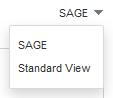
When several authored variants are relevant to a user with a role and on an endpoint, the variant that matches the different criteria the best is displayed; but the user can select another variant by clicking the view field.
A default personalization, known as factory personalization (and named SAGE), is delivered for all the standard pages available in Sage X3 Warehousing. Additional factory personlizations can be delivered by Business Partners named according to the factory owner (see User management).
The list of page variants is ordered according to the rules specified above, and addtionally BP and SAGE factory variants will appear at the end of the list. The exception to this is the last used variant which will appear at the top of the list.
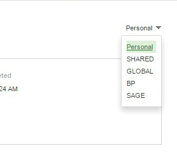
When entering the personalization mode, the page is divided into several regions:
* The upper bar.
* The left panel.
* The right panel.
* The central personalization area.
Different information appears and different actions can be done in these regions. They can be summarized within this schema:
Entering in personalization mode
The user who wants to personalize the pages, must enter the information on the page and click the personalization icon:
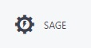
The switch to personalization mode displays the page in design mode:
- The screen layout is displayed in the middle of the page with structure selection and drag and drop capabilities.
- The left side of the page displays the structure panel.
- The right side of the page enables setting up the selected element.
- The top navigation bar gives access to global functions.
The top navigation bar
This bar has three groups of links as presented below:
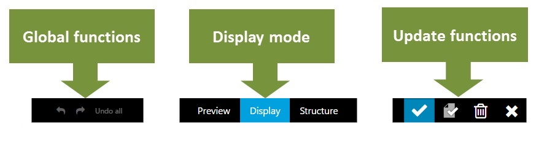
- The first group gives access to global functions: undo / redo for modifications, and access to help.
- The second group allows a user to define the global display option. The frequent option, explained first, is the Display mode.
- The third group is used to save and end the personalization function.
Important: The undo option allows only to undo a limited number of operations. But there is an option that allows to restart from scratch after performing a lot of modifications. To do this, you have to use the ESC + W + Z key combination.
The "structure description" left panel
| 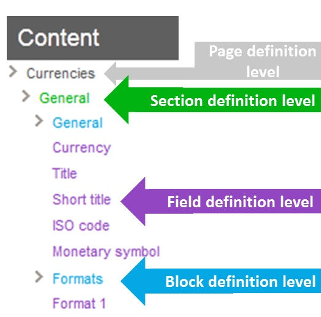 |
This panel lists the complete structure of the page. A page is organized in four levels:
|
Right panel options
The options available on the right panel depend on the level of the selected element.
A link called Exclude me is present at every level (except the page). This link allows excluding the corresponding element from the page. You can also insert an excluded element.
Note: a mandatory field can no more be excluded from a page.
At page level
When clicking on the top part of the personalization area, or if the root line of the organization panel is selected, the page looks like the screen below:
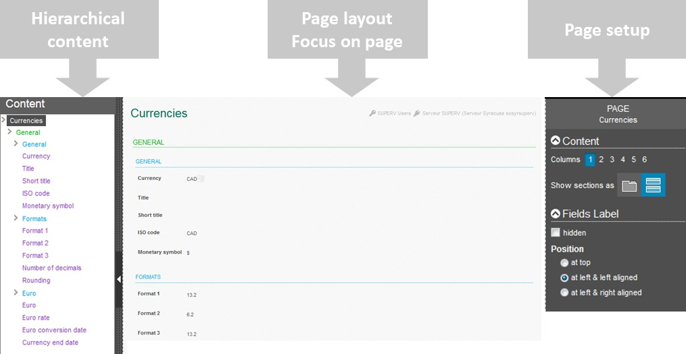
Sections of the page setup panel
The page setup panel has several sections:
Contents
The column choice allows you to organize the whole page on several columns. For example, if three columns are selected, the screen layout changes as shown below:
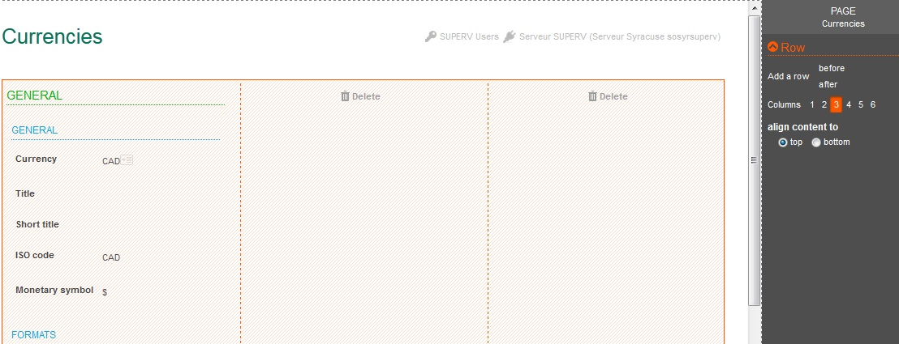
The new columns are empty. You can move elements from one column to another, and also delete columns by clicking the Delete icon. An additional choice defines the alignment policy of the elements in the column.
The second choice available for the general panel enables you to organize the lower level (the sections) either in tabs or in stacked blocks.
Fields label
This section defines default rules for all the field labels on the page. They can all be hidden, displayed at the top of the field, or displayed at the left of the field, and wherever they can be left or right aligned.
Page models
An additional list of options appears on the right panel at the page level. It allows you to use predefined page layouts. The list looks like the one shown below:
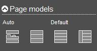
Clicking one of the icons will apply the model. New models will be delivered in the future; however, this list provides two dedicated models:
- The auto model is used for the standard deliveries of pages.
- The default model is the model where no personalization appears: all the elements are stacked.
At section level
When clicking the frame of a section (displayed in green), or if a section definition line of the organization panel is selected, the page displays as follows:
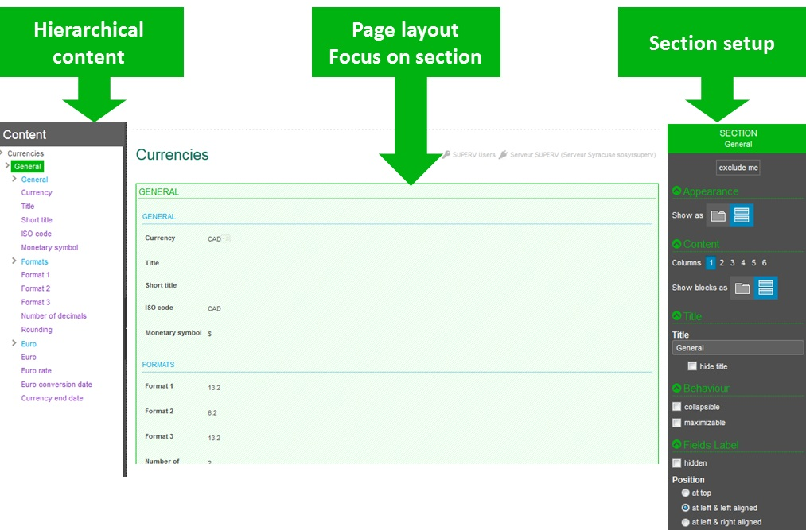
Sections of the section setup panel
The section setup panel has several sections:
Appearance
The section can be displayed as a stacked section or as a tab.
Content
For the page, a section can be organized in several columns by selecting a number of columns.
The second choice determines if the blocks included in the section are staked or organized as tabs. In this case, all the blocks of the section will appear as consecutive tabs. If only some of them should appear as tabs, the setup must be done on the block itself.
Title
The title of the section can be changed or hidden.
Behaviour
A section can be collapsible if the title is not hidden: a chevron appears in front of the title. By clicking on the corresponding chevron, it hides and displays the section.
A section can also be maximizable: a square icon appears on its upper bar. Clicking it will enlarge the section to the size of the current page.
Field labels
The same rules for field labels display can be set up, but only for the fields in the current section: label hidden, blank or visible, and label position at top or at left with left or right alignment.
At block level
When clicking the frame of a block (displayed in blue), or if a block definition line of the organization panel is selected, the page displays the following:
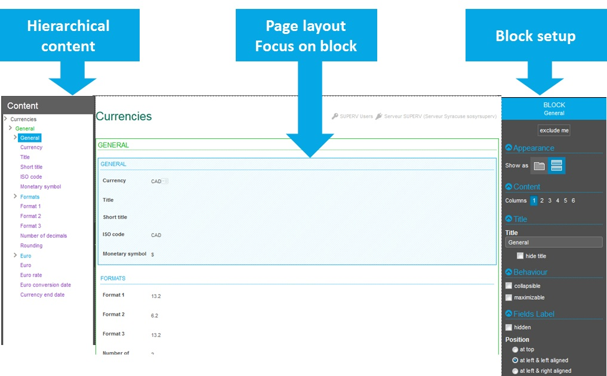
Sections of the block setup panel
The block setup panel has several sections:
Appearance
The block can be displayed as a stacked section or as a tab.
Content
For the page, a block can be organized in several columns by selecting a number of columns.
Title
The title of the block can be changed or hidden.
Behaviour
A block can be collapsible if the title is not hidden: a chevron appears in front of the title. By clicking the corresponding chevron, it hides and displays the section.
A block can also be maximizable: a square icon appears on its upper bar. Clicking it will enlarge the block to the size of the current page.
Field labels
The same rules for field labels display can be set up, but only for the fields in the current block: label hidden, blank or visible, and label position at top or at left with left or right alignment.
At field level
When clicking the frame of a field (displayed in purple), or if a line corresponding to a field is selected, the page displays the following:
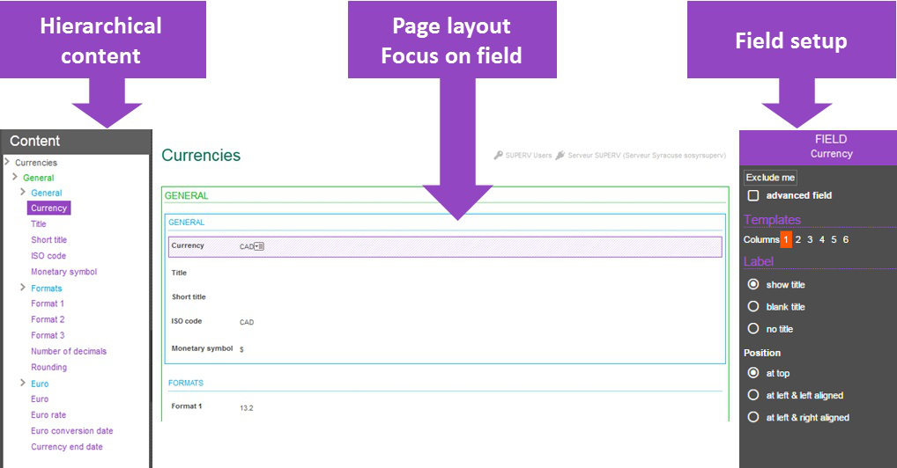
Sections on the field setup panel
The field setup panel has several sections:
Contents
The column choice allows the user to create columns where fields will be placed. The first column contains the current fields, and the next columns are empty and used as placeholders to move other fields in. You can delete columns by click the 'Delete' icon.
Label
This section defines the field label and in which position.
Additional sections
Depending on the type of field, additional options may appear to define widget options. Two examples are provided below:
| 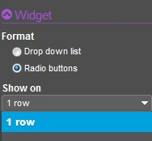 | When a field is a listing, options exist to determine how the options are defined; It can be a combo box, radio buttons that can be displayed on a row, or a variable number of columns. | ||||||||
| 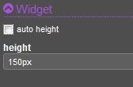 | When a field is a picture, options exist to size the picture (it can be automatic, or defined in pixels with the syntax nnn px). | ||||||||
| 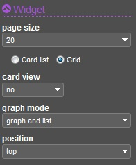 |
When a grid is selected by clicking the icon, a dedicated option exists to manage the grid options. They are the following:
|
||||||||
| If both representations are present on the page, the relative position of the graph can be set up with the following choices: | 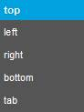 |
Left list options for grids
When a page includes a grid, clicking the icon also changes the left list with several panels available:
The first panel displays the fields present on the grid. Two icons are present before every field:
|
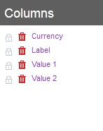 |
| The second panel is present only if a graphical representation is defined. For every numeric field present on the grid, a different graphical representation can be selected with the following choices:
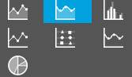 |
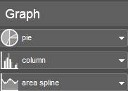 |
The result of this graph personalization can produce charts such as the following:
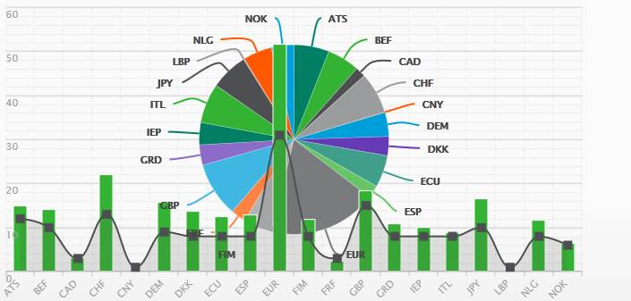
The central personalization area
Different modes available
This area displays the final layout page in different modes set up by the three available choices in the top area:
- The default mode is the Display mode. It shows the page components and enables you to modify the layout by using the drag-and-drop method. In this mode, the page can be enlarged to give the closest view of the final result by hiding the left panel with the vertical handle present in its middle.
- The view can also be summarized by clicking the Structure mode. In this view, only sections and blocks appear as a single field. This is useful when changing the structure of large pages: the first focus can then be given to the global organization of the page, and a switch to the previous mode giving access to the fine tuning.
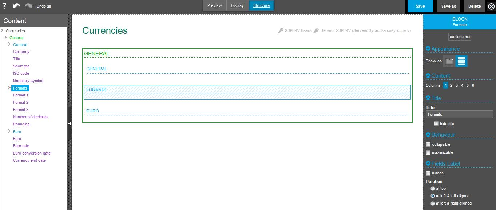
- A Preview mode is available to display the final result.
Moving elements
Moving elements can be done by performing the drag-and-drop method in the central personalization area. Any element (field, block, or section) can be moved by dragging and dropping in the desired location. A small indicator shows the destination location of the element being moved.
| Destination place | Display |
|---|---|
| Over an existing element | 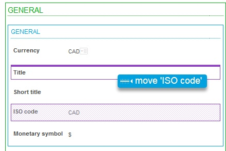 |
| Under an existing element | 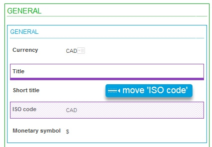 |
| At the left of an existing element | 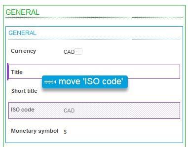 |
| At the right of an existing element | 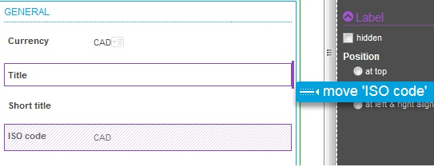 |
| As an additional tab | 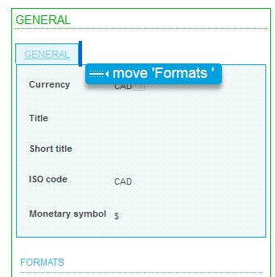 |
| At a forbidden destination place (shown is a section that cannot be moved inside itself) | 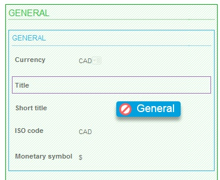 |
Section, blocks, and field insertions
The creation of a new block or section can be done when a field is moved outside of a block. For instance, the following screens show how you can move from a file at the beginning of the section. After the move is done, a new block is automatically created:
| Before move | After move |
|---|---|
| 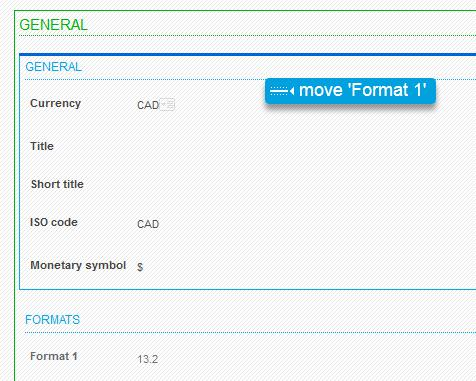 | 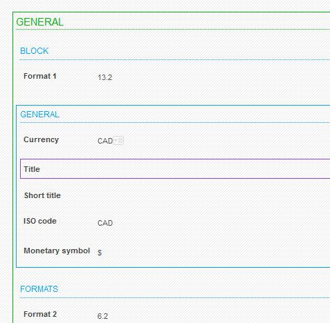 |
Another way to create a new section or block is to use the left panel with the Insert option. The following options are displayed:
| 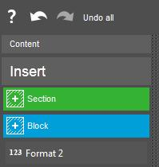 | This menu allows you to insert a new block, a new section, and also to insert fields that have been discarded during this personalization session or during a previous one by using the Exclude me link. |
The upper bar options
Undo options
The undo options can be accessed from the left side of the personalization panel:
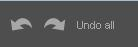
They allow you to perform the following actions:
- Undo the last operation performed (can be repeated).
- Redo the last undone operation (can be repeated).
- Return to the initial state when the personalization started.
Save options
The save options are available through icons present on the right side of the upper bar:
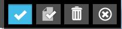
They allow you to save the results of the personalization options:
- Save as: Allows you to define the characteristics of the authored page in a pop up window that appears. At the first personalization of a page, the window will also appear if the Save option is selected.
- Save: Saves the personalization page with the current personalization options.
- Delete: Deletes the current personalization option. A confirmation is expected before the deletion is done.
- The (X) icon allows you to leave the personalization mode. If modifications have been made before the last save, a confirmation request is displayed before leaving the personalization mode:
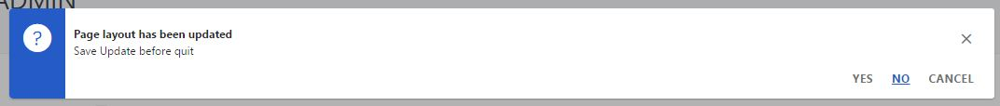
When the Save as option is selected, a window appears to allow the input of information about the authored page. The information on the window depends on the type of authoring being saved:
| 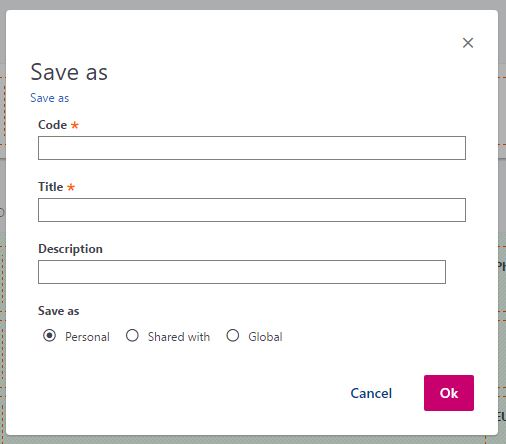 |
|
| 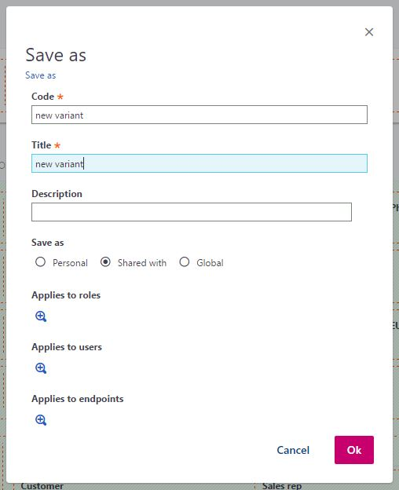 |
|
| 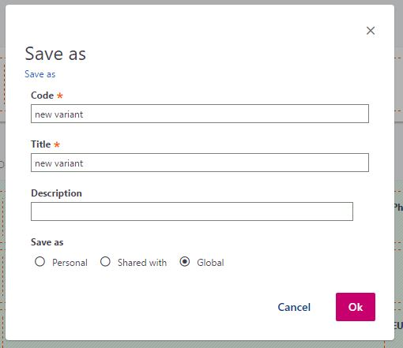 |
|
| 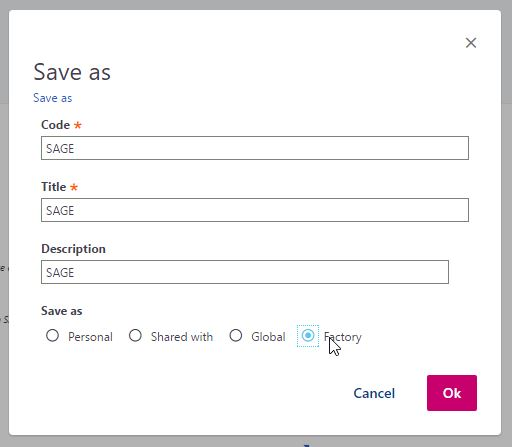 |
|